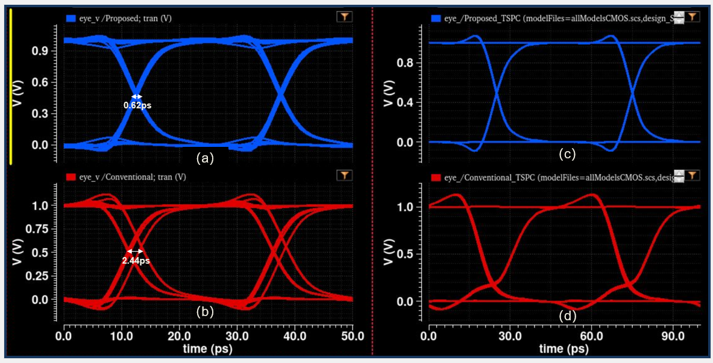
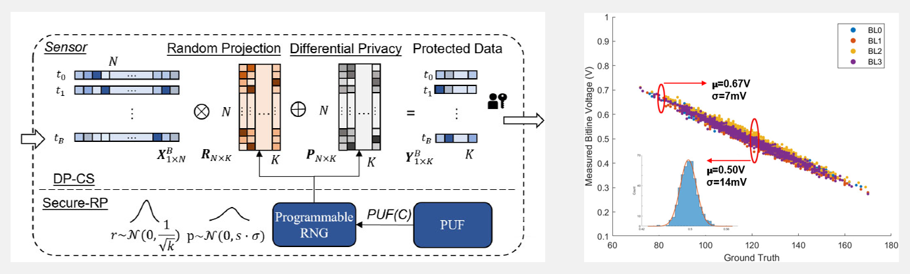
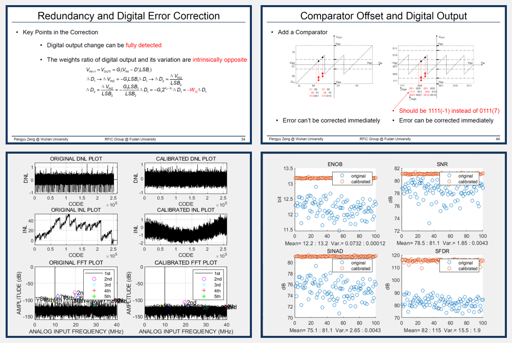

Pengyu Zeng
I am a first-year PhD student at University of Washington, Seattle, advised by Prof. Sajjad Moazeni. I am researching and interested in High-speed Optical Transceiver and Mixed-signal Circuits. I received my bachelor degree from Wuhan University, Wuhan, China, where I major in Electronic Information Engineering. I was a summer student at the University of Notre Dame in 2022, where I joined in Prof. Ningyuan Cao's group working on In-memory Computing.
News
Research Experience

Tags: Optical Interconnect, High-speed Serial Link, Mixed-signal Circuits, TIA, CTLE, SerDes
Background: Optical interconnect has a great potential in ultrahigh-speed short range data transmission. According to the prediction of IMEC, optical interconnect will be more efficient than conventional copper interconnect when the data rate is higher that 1Tbps in 1 cm transmission range. However, the design for high-performance efficient serializer & deserializer and analog frontend is challenging in optical transceiver.
Analysis & Results: In this research, for the serializer and deserializer, I proposed a new Tri-state MUX, which (Fig. a) has 0.25x jitter compared to the conventional design (Fig. b). Besides, I proposed a novel True Single-Phase Clock(TSPC) latch, which (Fig. c)is 2.4x faster than the standard cell, and have better eyes compared to conventional TSPC design (Fig. d). For the analog front end, MATLAB simulation is used to make a comparison among different architectures of AFE to find a optimal design. AFE is built with Transimpedance Amplifier(TIA) and Continues Time Linear Equalizer(CTLE) based on the simulation results.

Tags: CTLE, PAM-4, ISI, Wireline, Transceiver, Cadence
Abstract: As the data rate in the wireline transmission continues to increase, serializer & deserializer (SerDes) is widely used to recover the distorted signal caused by the channel with the low-pass feature. Continuous time linear equalizer (CTLE) as the frontend in the receiver plays a significant role in preliminary improving the signal quality. This research analyses the structure of CTLE and proposes comprehensive improvements on raising the peaking gain and keep the balance among the DC gain, power dissipation, silicon area, etc.
Tags: Process Variation, Analog Compute-in-Memory, Hardware Security, Compressed Sensing, Automation
Background: Analog computing has a great potential in neural network inference/training, solving differential equations and many other kinds of computations. Previous research has shown that SRAM-based mixed-signal CIM is more energy efficient compared to digital accelerators and NVM-based CIM. Besides, the stochastic nature of analog circuits provides entropy source which can be used to achieve secure computing and communication.
Motivation: In this research, a novel edge computing structure combining analog CIM and physical unclonable function(PUF) on the same SRAM array is proposed. A privacy-preserved compressing algorithm is implemented on this hardware. From a general perspective, A bottom-up analysis of nonidealities can help to find tradeoff among various of performance metrics and inspire the improvements. Specifically, process variation is the randomness source of PUF while limits the accuracy of CIM. We can control the shift between CIM and PUF if we can control the impact of the process variation.
Analysis & Results: The nonidealities analysis shows that the main factor limits the accuracy of CIM is the static error caused by the process variation, which is in a fusiform shape(Right Figure) and is common in RAM-based analog computing system. A metric to quantify the max error caused by process variation is proposed in the analysis. The control of process variation can improve the robustness and randomness of PUF. Besides, we wrote scripts to achieve an automatic flow from process/temperature variation generation, to SPICE netlist generation [Code]

Tags: Analog-to-Digital Convertor (ADC), Mismatch, Aperture Error, Correction, Calibration, Agile Design
Background:Pipelined ADC is one of the most popular types of ADC. The multiple-stage and pipeline design reduces the number of comparators and keeps a high speed. The digital error correction is a significant algorithm which can correct the digital output error caused by the mismatch of comparators and aperture error. However, this algorithm lacks of clear explanations for many questions. For example, why the outputs of each stage need overlap-addition to get the total output of ADC? Why the precision of a stage can be '1.5 bits' ? And why the error can be corrected?
Motivation: To answer the questions mentioned above, we need a systematic and quantitative modeling and analysis of pipeline ADC. From a general perspective, we need to describe the signal in algebraic equations to quantify the error and build links among the analog input signal, analog output(residue) and the digital output codes to explain the principal of correction. Besides, we have to build a bridge between a single stage's output and the ADC's total output to explain the reason of overlap-addition and 'x.5 bits'.
Analysis & Results: We build the transfer equation and its waveform to visualize the process of signal quantization and the impact of mismatch. We proposed that a valid correction should not only correct the digital output but also correct the analog residue to make sure the latter stage's input is correct. Besides, since the simulation on EDA tools is very slow, a behavior model on the MATLAB is built to preliminarily verify the design of ADC, which can accelerate the whole design process. This model will be open-sourced soon. [Slides]

Tags: SoC, Accelerator, ARM, FPGA, PCB
Abstract: A SoC for real-time image dehazing is implemented on Xilinx FPGA and uses ARM Cortex-M3 as CPU (Left). The Dark Channel Prior algorithm is divided into two 3-stage pipelines to accelerate the operation. The parallel filtering is also proposed to make full use of hardware resource and speed up the computations. PCB board is useful for chips verification and system implementation. I am familiar with PCB-level circuits design. These work (Right) is for a intelligent transport robot. [Schematics]Academic Projects
Latest update on January 3, 2023 at 05:10 UTC. Powered by W3.CSS .